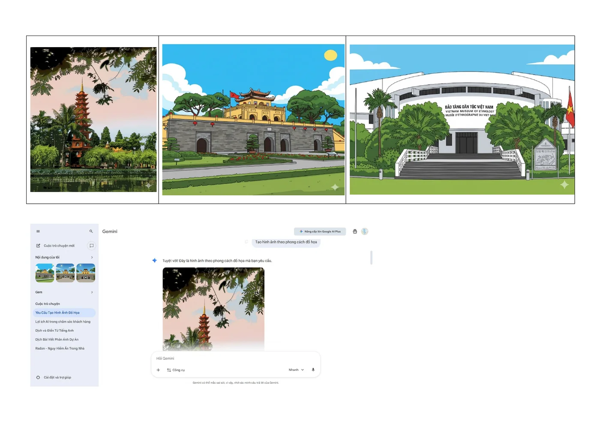
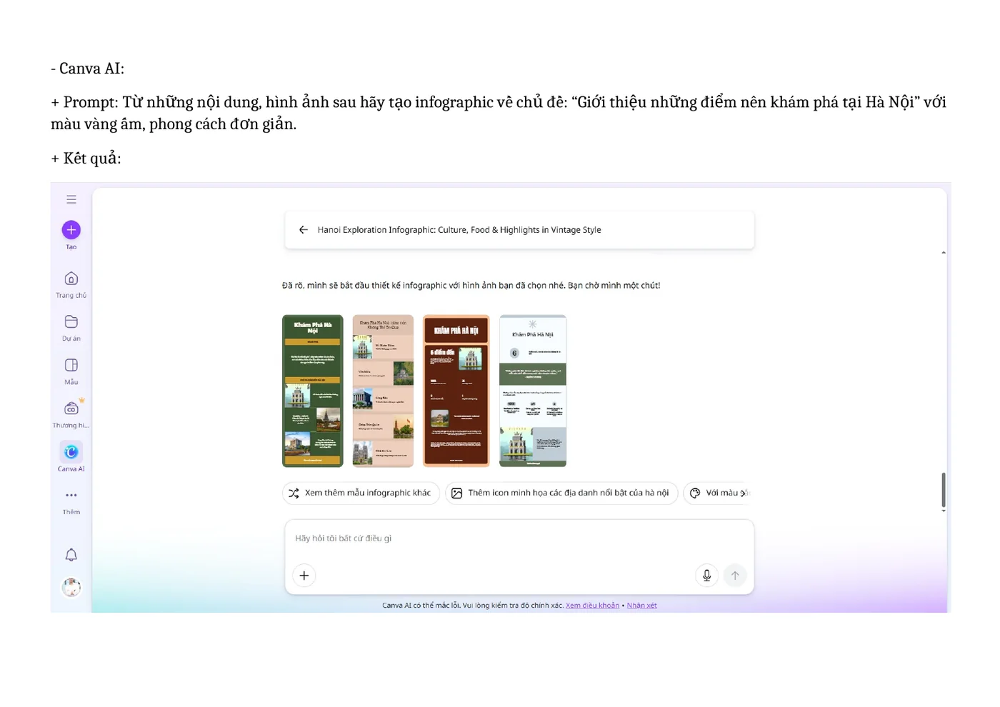

Năng lực cần hình thành
Thành thạo việc phối hợp các công cụ AI tạo sinh để hỗ trợ lên ý tưởng, viết nội dung, tạo hình và thiết kế sản phẩm số.
Các bước thực hiện
Lên nội dung bằng ChatGPT
Đề xuất 8 địa điểm, mô tả ngắn và hoạt động phù hợp.
Điều chỉnh phong cách bằng Gemini
Viết lại theo hướng truyền cảm hứng, trẻ trung và hiện đại.
Tạo hình minh họa
Dùng Gemini thử tạo hình theo phong cách đồ họa phù hợp.
Thiết kế bằng Canva AI
Nhập nội dung và hình ảnh, tạo bố cục màu vàng ấm rồi tinh chỉnh thủ công.
Ảnh minh họa từ sản phẩm
Nhấn vào ảnh để xem kích thước lớn.



Những gì đạt được
- Hoàn thành một infographic có chủ đề, màu sắc và phong cách nhất quán.
- Rút gọn nội dung để cân bằng giữa chữ và hình.
- Nhận diện khác biệt thế mạnh giữa công cụ viết, tạo hình và thiết kế.
- Hiểu rõ vai trò bắt buộc của kiểm chứng và chỉnh sửa thủ công.
Phân tích và hướng nâng cấp
AI làm tốt và phần con người phải giữ quyền kiểm soát
| AI hỗ trợ tốt | Hạn chế quan sát được | Cách mình xử lý |
|---|---|---|
| Gợi ý nhanh nhiều địa điểm và phong cách. | Mô tả đôi khi dài, chung hoặc lặp ý. | Rút gọn, ghép ý và điều chỉnh nhịp câu. |
| Tạo nhiều phương án hình ảnh. | Có thể sai chi tiết văn hóa, kiến trúc hoặc chữ. | Chọn lọc, đối chiếu và không dùng hình thiếu chính xác. |
| Canva tạo khung bố cục nhanh. | Bố cục tự động chưa cân bằng chữ - hình. | Căn lề, chỉnh font, màu, kích thước và khoảng trắng. |
Vấn đề đạo đức:
Minh bạch phần AI hỗ trợ, không phụ thuộc quá mức, tôn trọng bản quyền, kiểm chứng thông tin và tránh mô tả sai lệch giá trị văn hóa - lịch sử.
Sản phẩm đầy đủ
Bản PDF bên dưới được chuyển trực tiếp từ báo cáo đã hoàn thành. Nếu trình duyệt không hiển thị khung xem trước, hãy dùng nút mở PDF.
Tệp PDF được lưu ngay trong thư mục website.Mở báo cáo PDF ↗